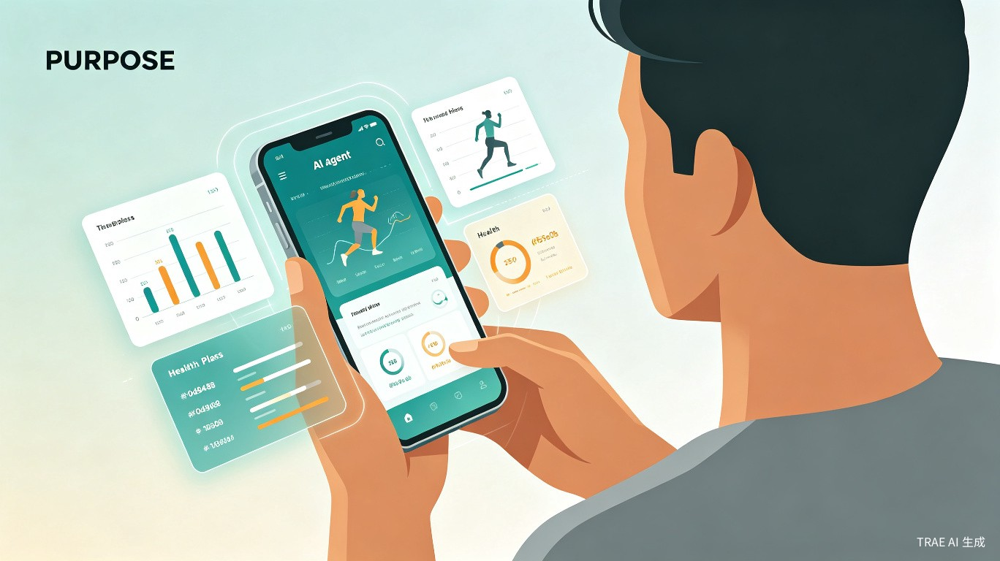
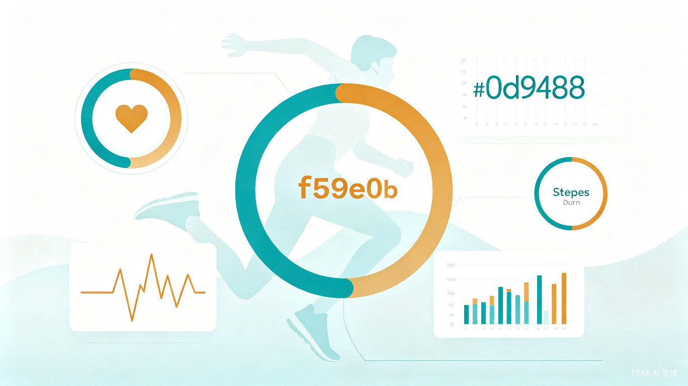
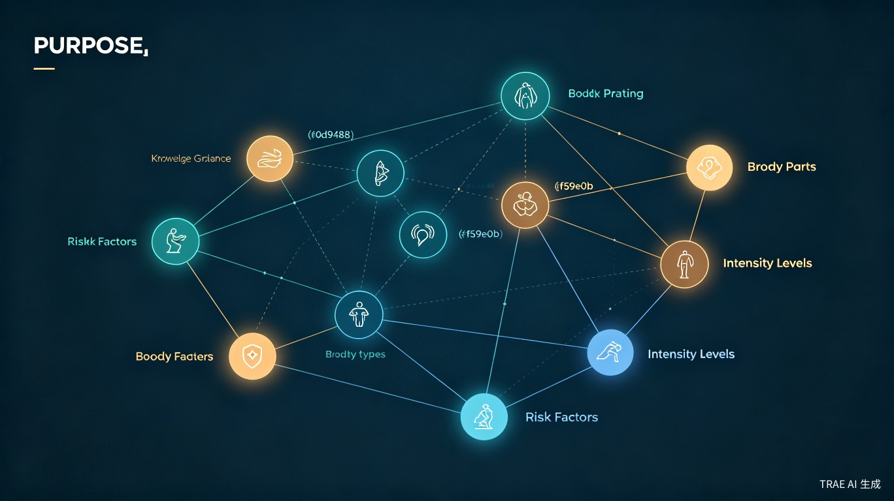

融合 ReAct Agent、知识图谱与 RAG 技术，打造科学、安全、个性化的智能健身指导系统
从"单次运动建议"到"持续动态健康管理"的智能化跃迁
本创意面向全民健身与主动健康服务需求，融合 ReAct-based Agent、知识图谱、RAG 检索增强生成等技术，构建一个能够自主理解用户需求、生成科学运动处方、动态调整训练方案的健身运动处方智能体。
系统通过整合运动项目、训练强度、适用人群、风险禁忌、训练效果等专业知识，建立体育健身知识图谱，并结合专家评价、用户反馈和规则校验机制，为用户提供更加科学、安全、个性化的健身指导服务。

精准定位用户群体，直击健身场景核心难题
有健身需求但缺乏专业指导的大众人群，希望获得科学有效的运动建议。
时间碎片化、需要高效个性化训练方案的年轻群体。
体质健康改善、慢性病风险管理需求突出的银发人群。
社区健身服务机构、体育教师、健身指导员等专业人士。
用户依赖网络经验或短视频教程，动作选择不合理，训练效果难以保证。
缺乏专业评估工具，训练负荷过大或过小，易造成运动损伤或效果不明显。
通用健身计划忽视个体禁忌症与身体限制，存在安全隐患。
传统运动处方多为一次性建议，无法根据反馈持续调整优化。

多层架构设计，确保智能、安全、可扩展

基于推理-行动循环的智能体架构，实现需求理解、知识检索、处方生成、反馈分析的全流程自主决策。
整合运动项目、训练强度、适用人群、风险禁忌、训练效果等实体关系，构建可推理的体育健身专业知识库。
结合向量检索与图谱查询，从海量专业文献和案例库中精准召回相关知识，支撑处方生成的证据链。
内置专家规则引擎，对生成处方进行禁忌筛查、强度校验、冲突检测，确保运动安全。
根据用户训练完成情况、身体反馈和满意度评分，持续迭代优化运动方案，实现长期健康管理。
支持自然语言对话、结构化表单、语音输入等多种交互方式，降低用户使用门槛。
智能体交互流程与处方生成示例
flowchart TD
A[用户输入
年龄/体质/目标/限制] --> B[ReAct Agent
需求理解与拆解]
B --> C[知识图谱查询
匹配适用运动项目]
C --> D[RAG 检索
召回相关案例与文献]
D --> E[处方生成引擎
制定个性化方案]
E --> F[规则校验
禁忌筛查与强度审核]
F --> G{校验通过?}
G -->|否| H[方案修正] --> F
G -->|是| I[输出运动处方]
I --> J[用户执行训练]
J --> K[反馈收集
完成度/体感/满意度]
K --> L[动态优化
方案迭代调整]
L --> B
用户画像：32岁女性，BMI 26，目标减脂塑形，每周可运动4次，膝关节曾受过轻伤
🤖 智能体生成处方：
系统基于知识图谱中"膝关节损伤→低冲击有氧→游泳/椭圆机"的推理路径，结合RAG召回的康复案例，生成兼顾目标与安全的个性化方案。
社会价值与效率提升的双重驱动
推动全民健身服务从经验化、粗放化向智能化、精准化转型。通过将专业运动处方知识与智能体技术结合，降低大众获取专业健身指导的门槛，提升居民主动健康管理能力，对促进体质健康水平提升、推动全民健身数智化发展具有积极意义。
系统自动完成用户需求理解、运动处方生成、风险校验、训练反馈分析与方案调整等流程，减少人工制定运动方案的时间成本，提高健身指导服务效率。对于社区、学校和健康管理机构而言，可作为辅助工具，帮助工作人员快速生成个性化运动建议。
差异化竞争优势与技术壁垒
不同于通用大模型的"黑盒"推理，基于结构化知识图谱实现可解释、可溯源的处方生成，每个推荐都有知识依据。
突破传统"一次性处方"局限，建立训练-反馈-优化的闭环机制，让方案随用户状态进化。
知识图谱禁忌规则 + 专家规则引擎 + 大模型自检，三重保障确保运动安全，降低运动损伤风险。
从健康青年到慢病老人，从健身小白到运动康复，覆盖全生命周期的个性化运动指导需求。